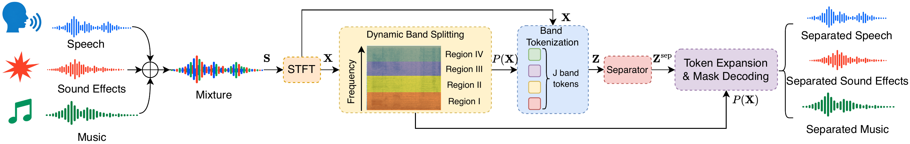
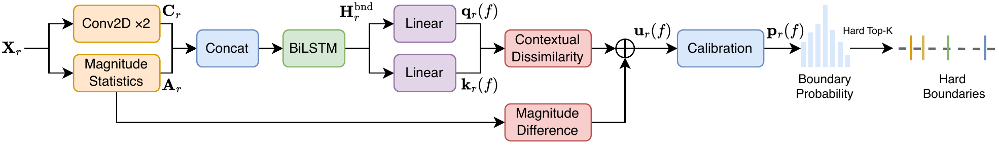
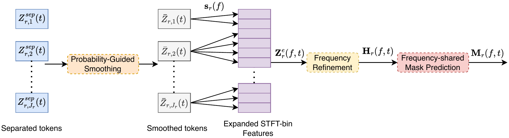
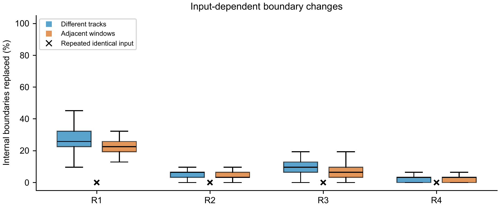
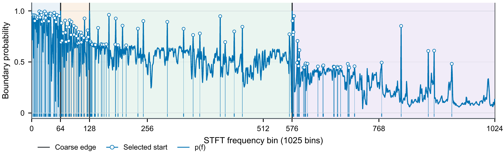

Abstract
Audio source separation models must preserve fine spectral structure while keeping the cost of the separator tractable. Band-split architectures reduce this cost by manually partitioning the spectrum into predefined frequency bands and encoding each band as a token, but the same boundaries are used for every mixture. Because informative spectral structure varies with source content, fixed boundaries can merge discriminative components or spend tokens where little resolution is needed.
We introduce Dynamic Band Splitting (DBS), an end-to-end framework that adapts boundary locations and band widths to each mixture under a fixed band-token budget. DBS predicts content-conditioned boundary scores within coarse frequency regions, selects a prescribed number of boundaries using hard Top-K, and applies content-dependent pooling to obtain compact band tokens. After separation, it smooths and expands these tokens to the original STFT grid, refines them along frequency, and decodes complex masks with a frequency-shared head.
DBS improved separation over the corresponding static models on DnR v2, MUSDB18-HQ, and EchoSet, with DBS-BSRNN achieving a relative gain of 29.0% in average SI-SDR on DnR v2. These results and boundary analyses on DnR v2 show that content-adaptive frequency partitioning benefits multiple separator backbones under a fixed band-token budget.
DBS-BSRNN over the reported BSRNN result on DnR v2, from 7.03 to 9.07 dB.
Boundary locations and widths move with the mixture; the token count and feature dimension do not.
BSRNN, TIGER, BS-RoFormer, and MelRoFormer, across cinematic, music, and speech separation.
Method
Where the boundaries come from
DBS divides the frequency axis into R coarse regions, each with a prescribed band budget, then predicts content-dependent boundary scores inside every region. Hard Top-K selection turns those scores into exactly the prescribed number of contiguous bands, so the separator always receives the same token count.
Boundary prediction
Temporal convolutions and per-bin magnitude statistics feed a BiLSTM; contextual dissimilarity and magnitude change give a boundary probability per candidate transition.
Hard Top-K selection
The highest-scoring transitions per region form contiguous bands. Locations and widths change across mixtures; the budget J does not.
Content-weighted pooling
Each variable-width band is pooled into one D-dimensional token per frame, giving the separator a fixed-size input sequence.
Full-resolution decoding
Separated tokens are smoothed, expanded back to the STFT grid, refined along frequency, and decoded into complex masks by a frequency-shared head.



Hard selection blocks ordinary gradients to the boundary predictor. DBS uses a straight-through estimator: the hard partition in the forward pass, a local soft assignment in the backward pass, plus a value-preserving confidence path and a ratio regularizer on the soft boundary density.
Results
Gains across datasets and backbones
All comparisons keep the band-token budget fixed within each pairing. Red superscripts show the gain in dB over the paired baseline; † marks models trained from scratch in this work.
DnR v2
cinematic separation · SI-SDR (dB)| Method | Music | Speech | SFX | Avg. | Params (M) | MACs (G/s) |
|---|---|---|---|---|---|---|
| Conv-TasNet | 0.30 | 8.50 | 2.00 | 3.60 | 5.3 | 19.8 |
| MRX | 4.20 | 12.30 | 5.70 | 7.40 | 30.5 | 10.6 |
| BSRNN | 5.50 | 13.80 | 1.80 | 7.03 | 52.8 | 18.2 |
| TIGER | 5.14 | 13.51 | 3.66 | 7.44 | 1.4 | 10.8 |
| BSRNN (128)† | 4.83 | 14.87 | 3.38 | 7.69 | 35.5 | 76.6 |
| DBS-BSRNN (128)† | 6.48+1.65 | 15.01+0.14 | 5.73+2.35 | 9.07+1.38 | 4.7 | 124.0 |
| TIGER (128)† | 6.18 | 14.91 | 5.13 | 8.74 | 1.4 | 20.4 |
| DBS-TIGER (128)† | 7.78+1.60 | 15.90+0.99 | 6.70+1.57 | 10.13+1.39 | 1.0 | 31.6 |
MUSDB18-HQ
music separation · four-stem SDR (dB)| Model | Vocals | Drums | Bass | Other | Avg. | Params (M) | MACs (G/s) |
|---|---|---|---|---|---|---|---|
| BSRNN† | 6.01 | 6.23 | 4.49 | 3.62 | 5.09 | 71.7 | 21.8 |
| DBS-BSRNN† | 6.70+0.69 | 6.44+0.21 | 4.58+0.09 | 4.01+0.39 | 5.43+0.35 | 21.7 | 20.8 |
| BS-RoFormer† | 5.14 | 5.76 | 3.95 | 3.17 | 4.50 | 378.5 | 292.7 |
| DBS-BS-RoFormer† | 7.64+2.50 | 7.72+1.96 | 5.29+1.34 | 4.72+1.55 | 6.34+1.84 | 33.9 | 290.5 |
| MelRoFormer† | 9.20 | 8.29 | 6.05 | 5.48 | 7.25 | 98.7 | 171.7 |
| DBS-MelRoFormer† | 10.02+0.82 | 9.30+1.01 | 6.96+0.91 | 5.98+0.50 | 8.07+0.82 | 19.2 | 252.9 |
EchoSet
speech separation · 0–8 kHz analyzed range| Method | SDRi | SI-SDRi | Params (M) | MACs (G/s) |
|---|---|---|---|---|
| A-FRCNN-16 | 9.64 | 8.76 | 6.1 | 81.3 |
| TDANet Large | 10.14 | 9.21 | 2.3 | 9.2 |
| TF-GridNet | 13.73 | 12.85 | 14.4 | 323.8 |
| BSRNN | 12.75 | 12.23 | 26.0 | 98.7 |
| DBS-BSRNN | 13.21+0.46 | 12.66+0.43 | 7.1 | 38.1 |
| TIGER | 14.22 | 13.73 | 0.8 | 15.3 |
| DBS-TIGER | 14.55+0.33 | 14.04+0.31 | 1.1 | 21.1 |
Analysis
The boundaries really do move, and it matters
Two controls separate the effect of boundary placement from the rest of the architecture. Across 64 DnR v2 test mixtures under the fixed 128-band budget, all 64 central three-second windows produced distinct partitions, boundaries changed between adjacent windows of the same recording, and repeated inference on identical inputs reproduced them exactly.

Fixed-boundary controls
DnR v2 · same architecture and schedule · 128 bands| Variant | Music | Speech | SFX | Avg. |
|---|---|---|---|---|
| BSRNN (128) | 4.83 | 14.87 | 3.38 | 7.69 |
| Uniform | 5.58 | 14.43 | 3.99 | 8.00 |
| BSRNN layout | 6.13 | 14.86 | 5.03 | 8.67 |
| Mel bands | 2.85 | 14.65 | 0.10 | 5.87 |
| Learnable filterbank | −11.47 | 8.62 | −32.30 | −11.72 |
| DBS-BSRNN | 6.48 | 15.01 | 5.73 | 9.07 |
Component ablations
DBS-BSRNN on DnR v2 · SI-SDR (dB)| Variant | Stage | Music | Speech | SFX | Avg. |
|---|---|---|---|---|---|
| Magnitude-only predictor | Boundary features | 4.33 | 14.02 | 2.43 | 6.93 |
| w/o explicit energy | Router input | 5.88 | 14.50 | 5.11 | 8.50 |
| w/o acoustic transition prior | Boundary score | 0.49 | 12.83 | −1.04 | 4.09 |
| w/o confidence path | Assignment gradient | 5.06 | 13.90 | 3.62 | 7.53 |
| w/o frequency refinement | Mask decoder | 0.11 | 13.26 | −1.61 | 3.92 |
| Full DBS | Full pipeline | 6.48 | 15.01 | 5.73 | 9.07 |
Substituting the BSRNN layout into the trained DBS model at inference, without retraining, reached 8.62 dB average SI-SDR against 8.67 dB for the separately trained fixed-layout model. Within the trained model, boundary placement alone accounted for a 0.45 dB gain over that layout and 1.27 dB over a uniform one.

Audio demo
Listen to three film scenes
Each scene is a continuous 30-second excerpt, separated by DBS-BSRNN and by the static 128-band BSRNN control under the same band-token budget. Click any thumbnail to move it into the large slot and play it; click the large video again to pause.
Videos play one at a time by design: starting one pauses the others, so you compare rather than mix. Playback is muted-free and loads only on demand.